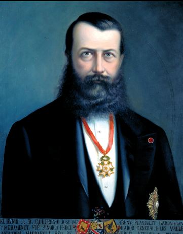

1866La Nova ReformaContemporània
523 signatures i un decret: la Nova Reforma obre el vot als caps de casa
Context històric
A mitjan segle XIX Andorra patia una crisi econòmica: les fargues començaven a tancar, la ramaderia tradicional perdia pes i la població emigrava. Una part dels sectors benestants va voler reformar les institucions, sempre amb el vistiplau dels coprínceps.
El 14 d'abril de 1866, els reformistes, encapçalats a l'inici per Anton Maestre, van presentar al bisbe Josep Caixal, a la Seu d'Urgell, 523 signatures. El 22 d'abril Caixal va publicar un decret de setze articles, la Nova Reforma, i a finals de maig el Consell General en va aprovar les lleis. Napoleó III la va ratificar el 1869.
El decret donava vot als caps de casa majors d'edat, per elegir els comuns i el Consell General, de 24 consellers renovats per meitats cada dos anys. Creava comissionats parroquials per fiscalitzar els comptes públics i impedia que una mateixa persona fos alhora conseller general, cònsol o conseller de comú.
L'abast real és discutit. El dret de vot continuava limitat als caps de casa, i després de la reforma van seguir manant els mateixos prohoms. Alguns autors hi veuen el final de l'immobilisme; d'altres, una reforma d'elits que no va democratitzar el país.
Dades, lectures i dubtes
- Dada
- Dates (14 d'abril, 22 d'abril, finals de maig, 1869), 523 signatures, setze articles, vot per als caps de casa majors d'edat i Consell General de 24 consellers.
- Interpretació
- El debat sobre l'abast de la reforma: final de l'immobilisme o reforma d'elits.
- Qüestió oberta
- Qui la va liderar. El Pla diu que Maestre l'encapçalava a l'inici; la Viquipèdia i Oliver Vergés, citat per Bondia, destaquen Guillem d'Areny-Plandolit.
Multimèdia

Fonts
- Biblioteca del Congrés (World Digital Library), «Pla de reforma adoptat en las valls de Andorra», 1866
- «Plan of Reform Adopted in the Valleys of Andorra, 31st of May, 1866» (traducció anglesa), worldstatesmen.org
- Bondia, «La revolució dels caps de casa» (cita Oliver Vergés i el llibre d'actes)
- Viquipèdia, «Nova Reforma»